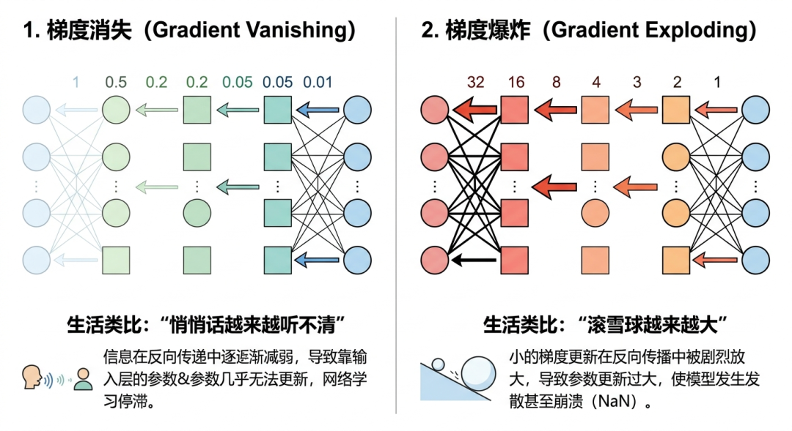
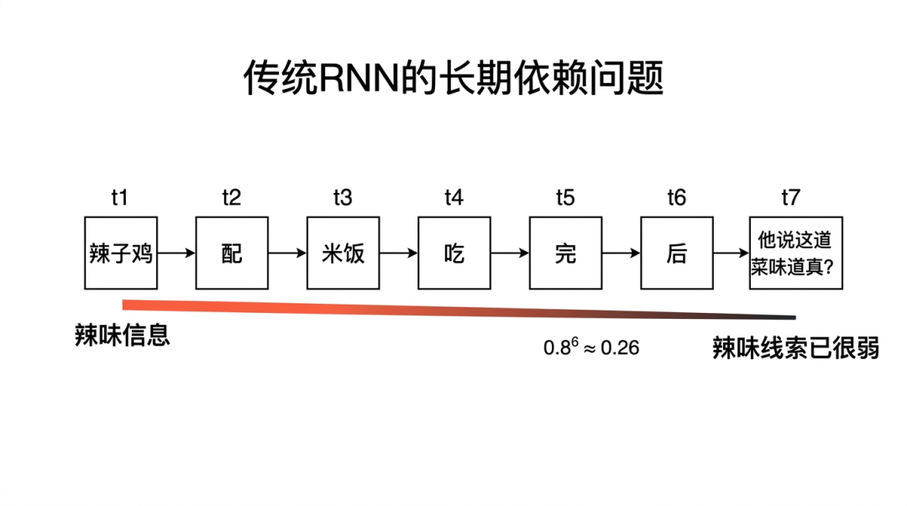
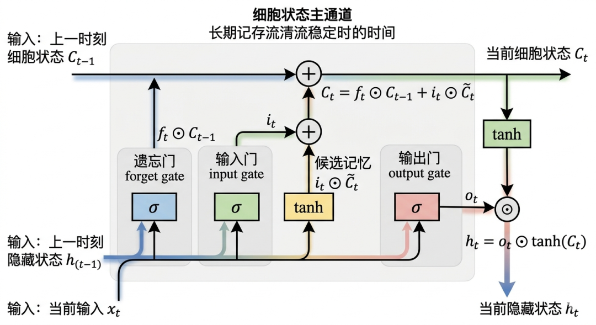
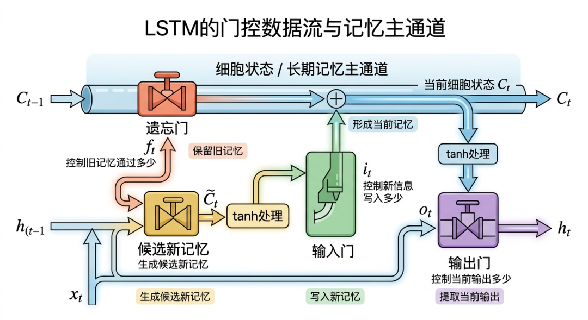
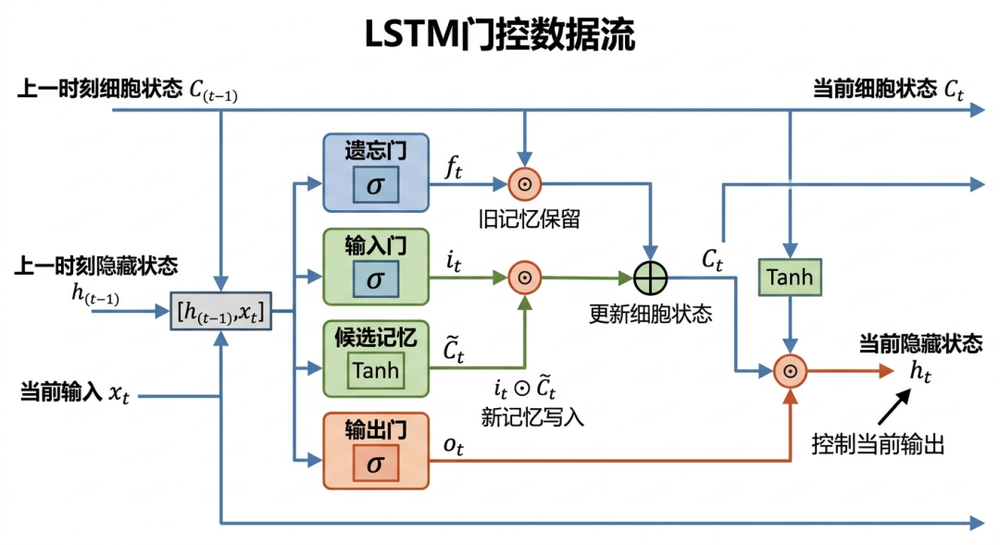
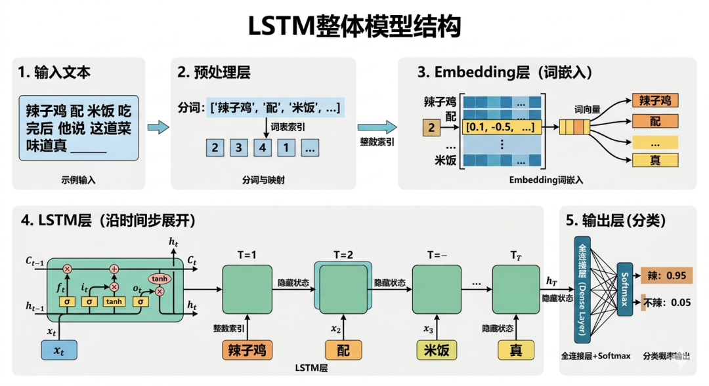
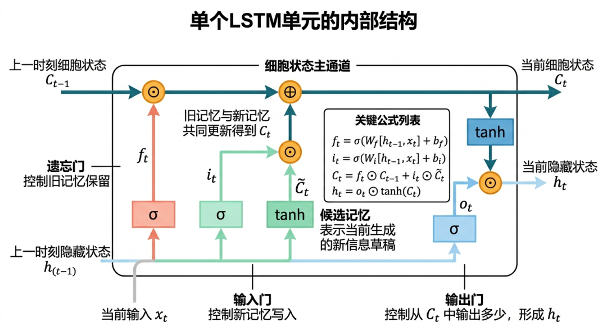
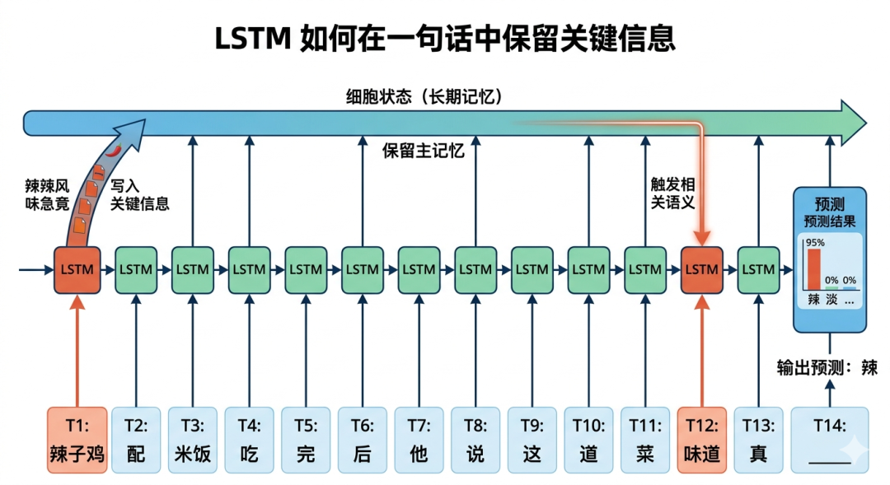

“如果我们能学习人脑的方法，就能利用这些生物启发的范式建造更智能的机器”——现代计算机之父冯·诺依曼
RNN通过引入循环结构，使网络能够处理序列数据，记忆并利用先前的信息影响后续输出，有效捕捉时间序列中的依赖关系，推动了自然语言处理、语音识别等领域的发展。
但传统 RNN 虽然迈出了“让神经网络拥有记忆能力”的关键一步，却很快暴露出一个大问题：当序列一长，它的记忆就开始变得不稳定。
这种不稳定主要体现在两个方面：第一是训练阶段容易遇到梯度消失和梯度爆炸；第二是即使模型表面上还能继续往后算，它对前面重要信息的保留能力也会越来越弱，出现一种“记得住开头，撑不到结尾”的现象。
这也是为什么传统 RNN 在短序列任务里还能一战，但一碰到长句子、长上下文、长时间依赖，往往就开始力不从心。
梯度消失和梯度爆炸，是深度神经网络训练中常见的问题，主要发生在反向传播过程中，会直接影响模型能否稳定训练、能否学到真正有用的规律。
而在 RNN 中，这个问题会更加明显。因为 RNN 不是简单地“从前往后算一遍”，它在训练时还需要把误差沿着时间反向传播回去。
时间步越多，这条反向传播链就越长，梯度在这条链上不断传递时，就可能越来越小，也可能越来越大。
从数学上看，RNN 在反向传播时，梯度会反复乘以循环权重矩阵 $W_{hh}$ 以及激活函数的导数。于是就会出现这样两种情况：
这么说可能还不好理解，我在下面两个小节专门用一些简单好懂的例子来说明。
我们首先来探讨梯度消失的问题，这有点像我们日常生活中的悄悄话游戏，假设有10个人排成一排，第一个人对第二个人轻声说一句话，然后依次传递下去。
如果每个人都把声音降低一点（比如降低到原来的80%），到最后一个人时，声音可能已经微弱到听不清了。
类比到反向传播，每个人降低声音的动作就像神经网络中每层激活函数的导数小于1。悄悄话就是梯度，经过多层传递后逐渐消失。
最后的结果就是没人能准确理解最初的信息，就像神经网络前几层的权重更新几乎为零，难以学习到有用的特征。
或者类似于：
$$ 0.1*0.1*0.1*0.1*0.1*0.1*0.1 ...... ≈ 0 $$一开始看着还有数值，乘着乘着，就没了。

然后我们再来讲讲梯度爆炸，梯度爆炸就有点像滚雪球，一开始你在山坡上轻轻推动一个小雪球。
然后雪球沿着山坡滚动，不断吸附更多的雪，雪球变得越来越大，速度和力量剧增，难以控制方向和速度。
体积和重量不断增加，最终巨大的雪球引发雪崩，造成巨大的破坏力，无法阻止。
类比到反向传播，训练开始时，权重和梯度的值相对较小，接着在反向传播过程中，由于权重或激活函数的导数大于1，梯度逐层累积，数值迅速增大。
当梯度累积到非常大时，权重更新变得剧烈，模型参数开始失控。梯度爆炸导致模型训练不稳定，损失函数剧烈波动，参数更新过大，可能出现NaN值，最终模型无法正常收敛。
或者类似于：
$$ 2*2*2*2*2*2*2*2*2*2*2*2.......≈无穷大 $$它不是慢慢变坏，而是会突然失控，指数级爆炸。
传统RNN让大模型拥有了突破word2vec上下文窗口大小级别的“记忆能力”，但这种记忆能力比较“脆弱”，它只能记住最近几步的信息，而难以捕捉长距离的依赖关系。
这种现象的根源在于传统RNN的结构设计和训练机制。能记一点，但记不久；能带一点上下文，但带不远。
也就是说，传统 RNN 并不是完全没有记忆，而是它的记忆更像短时记忆。距离当前越近的信息，越容易被保留；距离当前越远的信息，越容易被冲淡、覆盖、遗忘。这种现象背后，既有结构上的原因，也有训练机制上的原因。
尽管Truncated BPTT缓解了训练梯度不稳定的问题，但是Truncated BPTT计算的是真实梯度的一个近似值。它的核心思想是：序列太长时，不让误差无限往前传，而是只往前回传固定长度 $\tau$ 的时间步。
如果序列中的依赖关系长度超过了截断长度 τ，模型将难以学习这种长程依赖。因此，τ 的选择是一个权衡：τ 越大，梯度近似越精确，但计算成本越高；τ 越小，效率越高，但可能丢失长期信息。
实践中，τ 通常根据任务特性（如语句的平均长度、信号周期等）进行设置。
我们来看一个更直观的例子，预测“辣子鸡”的辣味属性，假设输入序列为：
时间步1："辣子鸡"
时间步2："配"
时间步3："米饭"
时间步4："吃"
时间步5："完"
时间步6："后"
时间步7："他说这道菜味道真？"
我们希望模型在时间步 7 预测这个“真？”后面更可能接什么语义，比如它需要根据最开始“辣子鸡”里的“辣味线索”，判断这道菜更可能是“辣”，而不是“甜”或者“咸”。
传统 RNN 的隐藏状态更新公式可为：
$$ h_t = \tanh(W \cdot h_{t-1} + U \cdot x_t) $$为了方便理解，我们做一个简化假设：循环信息每往后传一步，都会衰减一点，比如有效保留比例大约是 0.8。

时间步1（t=1）：输入“辣子鸡”，初始化隐藏状态：
$$ h_1 = \tanh(W \cdot h_0 + U \cdot x_1) $$此时“辣”特征被编码到 $h_1$ 中，假设 $h_1=0.9$。
时间步2（t=2）：输入“配”，更新隐藏状态：
$$ h_2 = \tanh(0.8 \cdot 0.9 + U \cdot x_2) \approx \tanh(0.72 + 0.1) = 0.75 $$“辣”信息衰减为原值的83%（0.72→0.75），新信息“配”加入。
时间步3（t=3）：输入“米饭”，继续更新：
$$ h_3 = \tanh(0.8 \cdot 0.75 + U \cdot x_3) \approx \tanh(0.6 + 0.2) = 0.67 $$“辣”信息进一步衰减至60%强度，叠加“米饭”的无关特征。
...
时间步7（t=7）：经过7次权重矩阵连乘后，初始信息的影响： $h_7 \approx 0.8^6 \cdot h_1 = 0.262 \cdot 0.9 = 0.236$ 此时“辣”的残留信号仅剩初始值的26%，几乎被噪声覆盖。
也就是说，最早的关键信号传到第 7 个时间步时，理论上可能只剩下最初强度的大约四分之一。 如果中间还混进了“配”“米饭”“吃”“完”“后”这些无关或弱相关信息，那么最后的隐藏状态里，真正有用的“辣味线索”就很容易被稀释掉。
从反向传播的角度看也是一样的。如果梯度在每一步都要乘上一个小于 1 的系数，那么传到最前面的那部分梯度就会迅速衰减。
反向传播时，梯度需从 $h_7$ 传递到 $h_1$。以 $\tanh$ 导数均值为 0.25 计算：
$$ \frac{\partial L}{\partial h_1} = \frac{\partial L}{\partial h_7} \cdot (0.8 \cdot 0.25)^6 \approx \frac{\partial L}{\partial h_7} \cdot 0.0003 $$初始时间步的梯度仅为最终梯度的0.03%，导致权重无法有效更新。这意味着，最前面那一步得到的训练信号会极其微弱。
模型并不是不知道“辣子鸡”这个词出现过，而是它很难通过训练，把这个远处信息持续地学成一个稳定、可靠的长期记忆。
所以，传统 RNN 的记忆问题，本质上可以概括成三点：
针对传统 RNN 在长距离依赖上的吃力表现，研究者开始思考：有没有一种办法，能让模型不是“把所有信息一股脑往后传”，而是学会有选择地保留、有选择地遗忘、有选择地输出”？
于是，门控循环网络（Gated RNN）的思想出现了。其中最经典、影响也最大的一个模型，就是 LSTM（Long Short-Term Memory，长短期记忆网络）。
1997 年，Hochreiter 和 Schmidhuber 在论文《Long Short-Term Memory》中提出了 LSTM。它最核心的突破，不是简单把 RNN 变复杂，而是给 RNN 加上了一套可控制的信息流机制：什么该留下，什么该忘掉，什么该写进去，什么该拿出来。
LSTM 最关键的两个部件是：细胞状态（Cell State）、门控系统（Gates），你可以把它理解成： 传统 RNN 像是只有一条很窄的山路，所有信息都挤在上面前进；而 LSTM 像是在这条路旁边又修了一条更平稳的主干道，并在沿途装上了几个智能阀门，专门控制什么能过、什么不能过。

细胞状态可以理解为 LSTM 里的“长期记忆主通道”，它负责把跨时间步的重要信息持续往后传。
相比传统 RNN 里所有信息都被压进隐藏状态里反复折腾，LSTM 单独拿出一条细胞状态通道来承载长期信息，这样一来，重要内容就不容易在一次次非线性变换中被迅速磨损掉。它有两个很重要的特点：
其一是通过线性更新避免了梯度消失的问题，因为它仅通过简单的乘法和加法操作更新，而不是传统RNN的连乘操作。
其二是信息的稳定性，即使经过数千时间步，早期信息仍能保留，例如在预测股票长期趋势时仍能保留经济周期规律。
这里不要被细胞状态这个词给吓倒了，它只是一个名字，本质上其仍然不过是向量而已：
cell_state = np.array([0.0, 0.0, 0.0])
如果说细胞状态是一条记忆主干道，那么门控系统就是安装在这条路上的几个“智能阀门”。
门控系统作用于每个时间步，每个时间步都有三个“智能阀门”控制消息流管道的内容，门控系统也是论文中的一个比喻而已，实际上它就是一个sigmoid函数。
因为sigmoid函数输出的范围严格在(0,1)之间，刚好对应门控的“开关强度”：0=完全关闭（阻断信息），1=完全打开（允许信息通过），完美匹配门控的控制逻辑，LSTM 主要有三个门。
它的功能决定哪些旧记忆要丢弃（如忘记无关的天气描述）。打开（值接近1）就保留管道里的旧信息，关上（值接近0）就清空对应旧信息；
$$ 遗忘门 = Sigmoid(输入 × 遗忘门权重 + 上一时刻细胞状态 × 遗忘门细胞状态权重 + 遗忘门偏置) $$工作逻辑：模型会盯着“当前看到的信息”（比如句子里的某个词）和“上一步的输出结果”，结合自己学来的判断标准，算出每个记忆维度的“保留强度”（0-1之间）。
举个例子，比如处理句子“我去年去了北京，今年还想去那里”时，遗忘门会给“北京”这个记忆打高分（比如0.9），牢牢保留；如果句子是“我喜欢猫，但是现在养了狗”，遗忘门会给“猫”的记忆打低分（比如0.1），慢慢淡化。
它的功能是负责筛选当前输入的重要信息（如记住新登场的人物）。管道的“注入阀”：打开就把新计算的有用信息（候选状态）注入管道，关上就拒绝新信息；
$$ 输入门 = Sigmoid(输入 × 输入门权重 + 上一时刻细胞状态 × 输入门细胞状态权重 + 输入门偏置) $$工作逻辑：先由模型生成一份“原始新信息”（比如“今年想去”“养了狗”这些新内容），再由输入门给这份新信息的每个部分打分（0-1之间），只有得分高的部分才会被允许加入长期记忆。
举个例子：看到“今年还想去”，输入门给“想去北京”这个新信息打高分（比如0.8），直接写入记忆；如果看到无关信息“今天天气很好”，输入门会打低分（比如0.05），拒绝把它加入长期记忆。
输出门负责判断：长期记忆里已经存了不少东西，但当前这一刻到底该拿哪部分出来作为输出？它的功能用于控制当前细胞状态中哪些信息可以输出给下一层。
$$ 输出门 = Sigmoid(输入 × 输出门权重 + 上一时刻细胞状态 × 输出门细胞状态权重 + 输出门偏置) $$工作逻辑：长期记忆里存着所有筛选后的新旧信息，但当前任务（比如文本分类、句子预测）可能只需要其中一部分。输出门会给记忆的每个维度打分（0-1之间），只把得分高的部分“抽出来”用。
举个例子：长期记忆里有“北京”“去年去过”“今年想去”，如果当前任务是“回答想去哪里”，输出门会给“北京”打高分（比如0.9），直接输出；如果任务是“回答什么时候去的”，就会给“去年”打高分，重点输出。

这些门控和细胞状态之间相互作用，构成了上图这样的门控系统，我们来详细分析一下LSTM单元数据流流程：
1、输入准备：
2、遗忘门：筛选旧记忆
3、输入门：生成新记忆
4、更新细胞状态：整合新旧记忆
5、输出门：生成当前输出
数据流总结为下图：
$$ \boldsymbol{x_t + h_{t-1}} \rightarrow \begin{cases} \text{遗忘门} \rightarrow f_t \otimes C_{t-1} \\ \text{输入门} \rightarrow i_t \otimes \tilde{C}_t \end{cases} $$
通过门控系统和细胞状态相互协作，LSTM似乎就得到了长期记忆的能力，这种协同机制的奇妙原理其实也很朴素，就是用“加减法”来保护记忆，我们看其简化后的记忆更新公式：
$$ 新记忆 = 遗忘门×旧记忆 + 输入门×新信息 $$但是更为标准的写法是：
$$ 新记忆 = 遗忘门⊙旧记忆 + 输入门⊙新信息 $$为什么要将乘法符号换成这个⊙符号？这个圆圈内加一个点的符号⊙，读作“哈达玛积”，它不是矩阵乘法，而是维度完全相同的两个向量进行逐个元素相乘法：
A = [1, 2, 3]
B = [4, 5, 6]
A ⊙ B = [1×4, 2×5, 3×6] = [4, 10, 18]
这种做法有什么好处呢？注意哈达玛积在后续学习注意力机制的时候会再次提到，好处有以下两点：
（1）维度不变，不破坏记忆结构： 哈达玛积要求两个向量/矩阵维度完全一致，相乘后维度不变——细胞状态是承载长期记忆的向量（比如3维），门控输出也是同维度的0-1向量，相乘后仍保持3维，不会打乱记忆的“维度对应关系”（比如第1维对应“地点”、第2维对应“时间”）。
（2）逐元素加权，实现精准控制： 哈达玛积是“点对点相乘”，门控向量里的每个0-1值，能单独给细胞状态对应维度的记忆“调强度”——想保留80%就乘0.8，想遗忘就乘0.1，每个记忆维度的控制互不干扰，完美契合门控“筛选记忆”的核心功能。
这种加法结合哈达玛积代替传统RNN用乘法更新状态的好处就是，加法和逐个元素相乘的操作能让梯度保持稳定，即使经过1000步也能传递。
LSTM通过“细胞状态+智能门控系统”的设计，像一条精密的记忆流水线：遗忘门清理垃圾信息，输入门收纳关键新知，输出门精准提取所需内容。这种机制让AI既能记住“三个月前学过的单词”，又能忽略“昨天无关的广告”，成为处理时序数据的经典工具。

介绍完LSTM核心层，我们接下来介绍LSTM的整体模型结构，也是分为输入层、
1、预处理层（非神经网络层）
["我","喜欢","LSTM”]，再映射为词汇表中的索引 [5, 12, 28]。
2、Embedding层（必备前置层）
Embedding 的意义在于：它把“离散编号”变成了“可计算的语义向量”。比如“猫”和“狗”的向量可能比较接近，“猫”和“挖掘机”的向量可能就比较远。这些向量可以随机初始化，也可以用 Word2Vec、GloVe 这类预训练词向量初始化。
3、LSTM层（核心层） 这部分是模型真正处理时序依赖的地方。
4、输出层（任务相关）

前面讲了这么多抽象概念，现在我们用一个完整流程，看看 LSTM 到底是怎么在文本任务里工作的。我们将通过一个完整的流程，详细拆解LSTM如何处理序列数据并做出预测。
我们以“辣子鸡配米饭吃完后他说这道菜味道真____？” 为例，完整拆解LSTM从数据预处理到最终预测的全流程，目标是让模型根据上下文，预测空格处应填“辣”（概率）还是“不辣”（概率），核心是捕捉“辣子鸡”的辣味语义并长期保留。
这个例子本质上是在模拟一件事：模型能不能把前面出现的关键信息，一路带到后面真正需要做判断的位置。

LSTM无法直接处理文字，需先将离散文本转化为模型可识别的数值形式，核心是“预处理→词汇表→Embedding”三步。
词汇表 = {
"<PAD>": 0,
"<UNK>": 1,
"辣子鸡": 2,
"配": 3,
"米饭": 4,
"吃": 5,
"完": 6,
"后": 7,
"他": 8,
"说": 9,
"这": 10,
"道": 11,
"菜": 12,
"味道": 13,
"真": 14,
"辣": 15,
"不辣": 16
}
于是这句话可以映射成索引序列：[2, 3, 4, 5, 6, 7, 8, 9, 10, 11, 12, 13, 14, 1]，这里最后的“____”先用 <UNK> 或占位符表示，后续由模型预测。
接下来，Embedding 层会把这些整数索引映射成向量。它将整数索引映射为低维稠密向量（如300维），解决“离散索引无语义”的问题，让相似词的向量距离更近。
初始化方式：可随机初始化，然后训练中优化，或用预训练词向量，如Word2Vec进行初始化，这样可以更快捕捉语义。
最终经过训练之后，每个索引对应的向量表示，这里是300维的简化展示：
（1）“辣子鸡”（索引2）→ [0.12, -0.45, 0.78, 0.61, -0.23, ..., 0.33]（其中与“辣”相关的维度权重较高，如第4维0.61）
（2）“配”（索引3）→ [-0.22, 0.15, -0.33, 0.02, 0.11, ..., 0.91]（与辣味无关，相关维度权重接近0）
（3）“味道”（索引13）→ [0.35, -0.18, 0.22, 0.58, -0.09, ..., 0.47]（与“味觉”相关，与辣味维度有部分重叠）
这里不用太纠结每个具体数值，它们只是为了帮助理解。真正重要的是：一旦文本被映射成向量，LSTM 才能开始在“语义空间”里处理这些词。
LSTM层由14个LSTM单元按时间步串联，这对应14个分词，每个单元通过“遗忘门、输入门、输出门”控制信息流动，核心是保留“辣子鸡→辣”的关键信息，过滤无关上下文。以下按时间步拆解，重点展示关键门控系数和细胞状态变化：
这是整个序列里最关键的早期线索。直观理解就是：模型在第一步已经形成了一份初始判断——这道菜很可能和“辣味”有关。
输入： 含强烈“辣”语义
$$ x₁ = [0.12, -0.45, 0.78, 0.61, ..., 0.33] $$初始状态：
门控处理：
经过遗忘门、输入门、候选记忆和输出门处理后，$C₁$ 和 $h₁$ 均携带“辣”的关键语义，为长期记忆打下基础。
“配”这个词本身对“辣不辣”的判断帮助不大。于是模型更理想的行为是：
输入： 与辣味无关
$$ x₂ = [-0.22, 0.15, -0.33, 0.02, ..., 0.91] $$门控处理：
核心作用： LSTM通过“高遗忘门+低输入门”，过滤“配”这类无关词，保护核心记忆不被冲刷。
换句话说，LSTM 在这里不是“重新记一个全新世界”，而是更像在说：好的，‘配’我看见了，但主线信息还是前面的‘辣子鸡’更重要。
这一长段里，大多数词对“辣味属性”的核心判断都不是决定性信息。理想情况下，LSTM 会做两件事：继续保住早期的辣味线索、 不让这些中间词把主记忆冲散。这就是 LSTM 相比普通 RNN 更厉害的地方。
输入特点： 均为中性词（“米饭”是搭配、“吃/完/后”是动作/时间、“他/说”是主语/动词、“这/道/菜”是指代），与辣味无关。
门控统一行为（以“米饭”为例）：
关键： LSTM的“长记忆能力”在此体现——即使经过8个无关词，细胞状态仍牢牢记住“辣子鸡→辣”。
传统 RNN 往往会把这些信息都压进同一条状态链里反复混合，久而久之，最早那一点“辣味线索”就会越来越淡。而 LSTM 则更有机会把它一直沿着细胞状态通道保留下来。
“味道”一出现，任务 suddenly 变得很明确了。因为前面那条一直被保留下来的“辣味线索”，现在终于遇到了一个强相关触发点：模型意识到，前面存着的信息，正好可以拿来回答当前这个位置的判断。
输入： $x_{11} = [0.35, -0.18, 0.22, 0.58, ..., 0.47]$（与“味觉”强相关，触发辣味记忆）
门控处理：
所以这一步里，更理想的行为是继续保留早先关于“辣子鸡”的记忆，同时把“味道”与“辣味”之间的关系强化起来，为后面的最终预测做准备。
输入特点：
“真”主要是强化语气，“____” 对应的是模型即将预测的占位符：
$$ 索引14→x_{12}，索引1→x_{13}/x_{14} $$门控处理：
最终状态：
到了这一刻，LSTM 最终输出的隐藏状态 $h_{14}$ ，就可以理解成：前面整个句子经过筛选、保留、整合后的浓缩语义结果。
而这份结果里，如果“辣子鸡”的语义线索一直被保住，那么模型就更容易在这个位置判断出“辣”的概率更高。
LSTM 的最终隐藏状态 $h_{14}$，还不能直接拿来当答案，它还需要过一个输出层。需通过“全连接层+激活函数”映射到任务目标（二分类：“辣”vs“不辣”）。
1、全连接层（特征映射）
2、Softmax层（概率归一化）
3、预测结果与解读
如果这条样本的真实标签确实是“辣”，那么模型就会根据预测结果和真实标签之间的差异，计算损失，然后通过反向传播更新参数。
被更新的参数包括：Embedding 层中的词向量参数、LSTM 内部的门控参数、输出层参数
经过大量样本反复训练后，模型就会逐渐学会：哪些词应该长期记住，哪些词只是中间噪音，哪些信息在后面遇到特定上下文时需要被激活出来，这正是 LSTM 的实战价值所在。
LSTM 的真正厉害之处，不在于它“永远不忘”，而在于它终于让序列模型拥有了一种更成熟的记忆管理能力：
对于门外汉来说，你可以把它理解成：传统 RNN 像一个脑子不坏但有点慌的人，什么都想记，结果记着记着就乱了；而 LSTM 则更像一个会做笔记、会划重点、会删垃圾信息的人。
这就是为什么在 Transformer 出现之前，LSTM 曾经长期是 NLP、语音和时序建模中的核心主力之一。它不是简单把 RNN 变复杂了，而是第一次让“记忆”这件事，开始变得像一回事。
梯度消失：指神经网络在反向传播时，梯度在多层或多时间步传递过程中不断变小，最后小到几乎传不到前面。对 RNN 来说，这意味着越靠前的时刻越难得到有效训练，模型就越难学会“很久之前出现过的重要信息”。
梯度爆炸：与梯度消失相反，梯度在反向传播过程中不断放大，导致参数更新过猛，训练过程剧烈震荡，严重时甚至会出现 NaN。它像滚雪球一样，刚开始不起眼，但一旦失控，整个训练过程都会被拖垮。
长期依赖：指序列后面的判断，需要依赖很久之前出现的信息。比如一句话前面埋下的主语、地点、情感或属性，要到后面很多个时间步之后才真正派上用场。传统 RNN 不是完全不能处理长期依赖，而是处理得不稳定、容易遗忘。
细胞状态：LSTM 中专门负责“长期记忆传递”的主通道，本质上仍然是一个向量。它不像传统 RNN 那样把所有信息都压进同一条状态链里反复折腾，而是让重要信息有机会沿着一条更平稳的路径持续往后传。这也是 LSTM 比普通 RNN 更擅长处理长序列的关键原因之一。
门控机制：LSTM 的核心设计思想。它通过遗忘门、输入门、输出门三组控制器，决定旧信息保留多少、新信息写入多少、当前记忆输出多少。你可以把它理解成一套“智能阀门系统”——不是所有信息都照单全收，也不是所有旧记忆都一刀切删掉，而是按重要程度做动态调节。
哈达玛积：也叫逐元素相乘，记作 ⊙。它不是矩阵乘法，而是两个同维度向量一一对应相乘。LSTM 中门控向量和细胞状态相乘时，用的就是这种操作。它的意义在于：模型可以精细控制每一个记忆维度，而不是粗暴地整体放大或整体缩小。